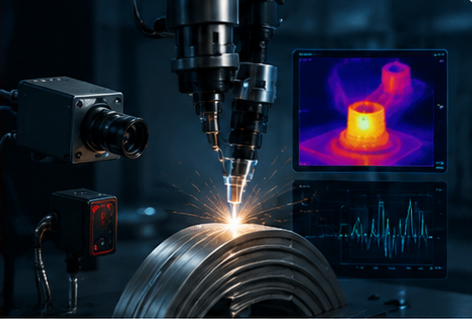
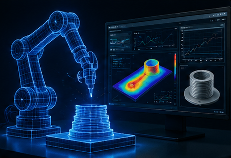
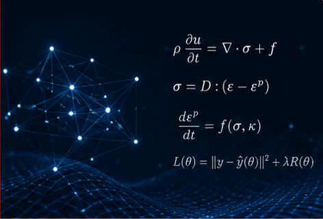
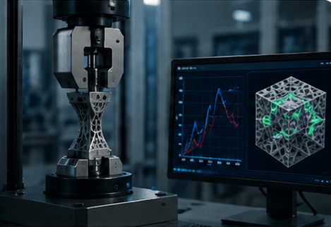
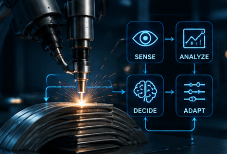
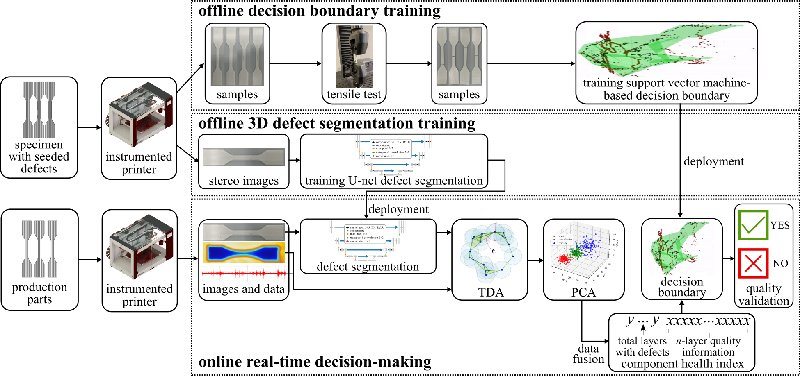
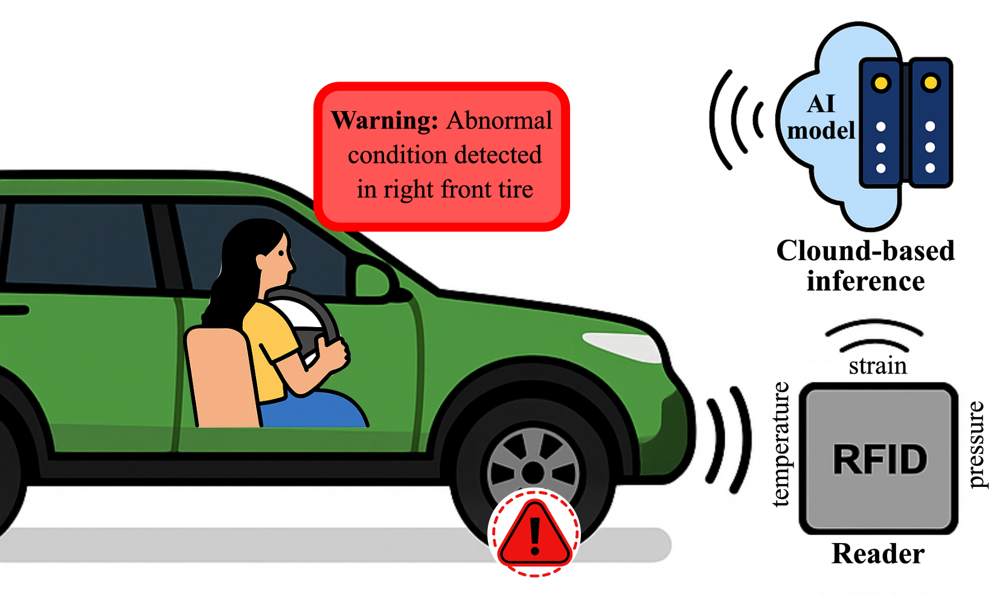

Research
Intelligent Manufacturing
Sensing, digital twins, structural validation, and adaptive decision-making.
Research Areas
What we study

Digital Twin & Simulation

Physics–AI

Structural Validation

Adaptive Control & Decision-Making
Selected Projects
Where we apply it

NSF · PI · 2025–2028
Real-Time Monitoring and Structural Validation for Continuous Fiber Printing

DOT / FMCSA · Co-PI · 2025–2027
Topology-Aware AI for Tire Health Monitoring

NASA · Co-PI · 2025–2026